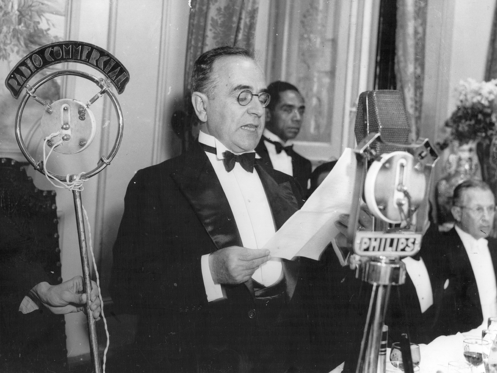

BANCO DE QUESTÕES
Igor Bueno
01.
Fuvest 2023
O governo de Getúlio Vargas (1930–1945) ficou marcado por medidas que transformaram as relações entre o Estado e a sociedade brasileira. Assinale a alternativa que melhor representa uma dessas medidas.
Alternativas:
A
Criação da Constituição de 1891, que estabeleceu o federalismo brasileiro.
B
Política de valorização do café por meio do Convênio de Taubaté.
C
Criação da Consolidação das Leis do Trabalho (CLT).
D
Adoção do parlamentarismo como forma de governo.
E
Privatização de empresas estatais para reduzir a intervenção do Estado.
Progressão da questão
1 de 1
Acertos 1
Erros 1
Em Branco 1
Tempo gasto
00:02:45
1
2
3
Resposta certa
O governo Vargas promoveu diversas reformas trabalhistas, sendo a Consolidação das Leis do Trabalho (CLT), criada em 1943, uma das principais. Ela unificou a legislação trabalhista e garantiu direitos como férias, jornada de trabalho limitada e proteção ao trabalhador.
Referência:
FAUSTO, Boris. História do Brasil. São Paulo: Edusp, 2018.
FAUSTO, Boris. História do Brasil. São Paulo: Edusp, 2018.
